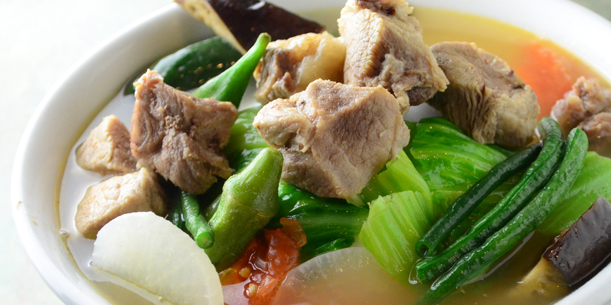
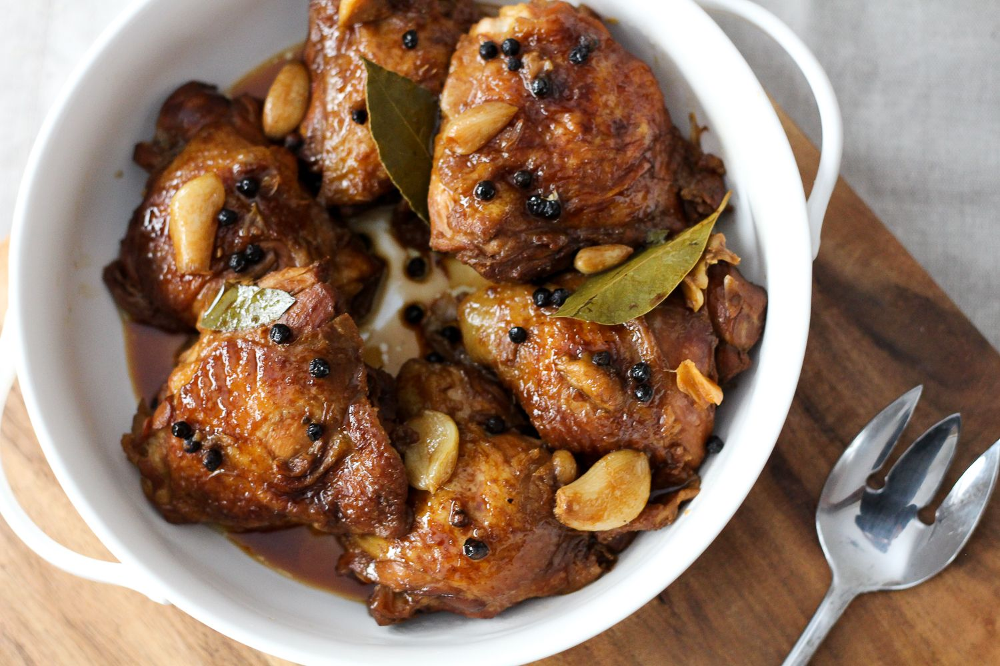
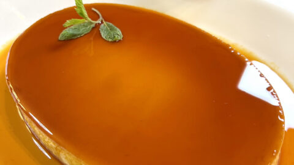

Recipes
Appetizer: Lumpiang Shanghai

Ingredients:
- 1 pound ground pork
- 1/2 cup carrots, finely chopped
- 1/2 cup green onions, chopped
- 1/4 cup soy sauce
- 1 teaspoon garlic, minced
- 1/2 teaspoon pepper
- Spring roll wrappers
- Oil for frying
Instructions:
- In a bowl, combine ground pork, carrots, green onions, soy sauce, garlic, and pepper.
- Wrap a tablespoon of the mixture in a spring roll wrapper, sealing the edges with water.
- Heat oil in a pan and fry the rolls until golden brown.
- Drain on paper towels and serve with sweet and sour sauce.
Soup: Sinigang na Baboy

Ingredients:
- 2 pounds pork belly, cut into chunks
- 8 cups water
- 1 onion, quartered
- 2 tomatoes, quartered
- 1 radish (labanos), sliced
- 1 cup green beans
- 1 cup tamarind paste or 1 packet sinigang mix
- Salt and pepper to taste
- Fresh spinach or water spinach (kangkong)
Instructions:
- In a large pot, boil pork in water until tender, about 1 hour.
- Add onion, tomatoes, and radish. Cook for another 10 minutes.
- Stir in green beans and tamarind paste. Season with salt and pepper.
- Add spinach and cook for 1 more minute. Serve hot.
Main Course: Chicken Adobo

Ingredients:
- 2 pounds chicken, cut into pieces
- 1/2 cup soy sauce
- 1/2 cup vinegar
- 1 onion, sliced
- 4 cloves garlic, minced
- 2 bay leaves
- 1 teaspoon peppercorns
- 2 tablespoons oil
Instructions:
- In a bowl, marinate chicken in soy sauce, vinegar, onion, garlic, bay leaves, and peppercorns for at least 30 minutes.
- Heat oil in a pot, add marinated chicken, and brown on all sides.
- Add marinade and simmer for 30 minutes until chicken is tender.
- Serve with steamed rice.
Side Dish: Garlic Fried Rice (Sinangag)

Ingredients:
- 4 cups cooked rice (preferably day-old)
- 6 cloves garlic, minced
- 2 tablespoons oil
- Salt to taste
- Chopped green onions for garnish
Instructions:
- Heat oil in a pan, sauté garlic until golden brown.
- Add cooked rice, breaking up clumps. Stir-fry for 3-5 minutes.
- Season with salt and garnish with green onions before serving.
Dessert: Leche Flan

Ingredients:
- 1 cup sugar (for caramel)
- 1 can (14 oz) sweetened condensed milk
- 1 can (12 oz) evaporated milk
- 6 large egg yolks
- 1 teaspoon vanilla extract
Instructions:
- In a saucepan, melt sugar over medium heat until golden brown. Pour into a flan mold to cover the bottom.
- In a bowl, whisk together condensed milk, evaporated milk, egg yolks, and vanilla until smooth.
- Pour the mixture over the caramel in the mold.
- Steam for about 30-40 minutes until set. Let cool before inverting onto a plate.